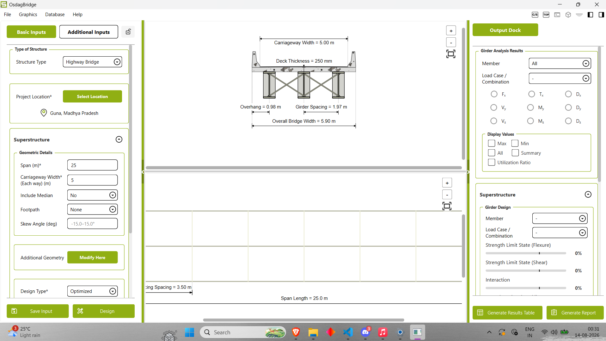
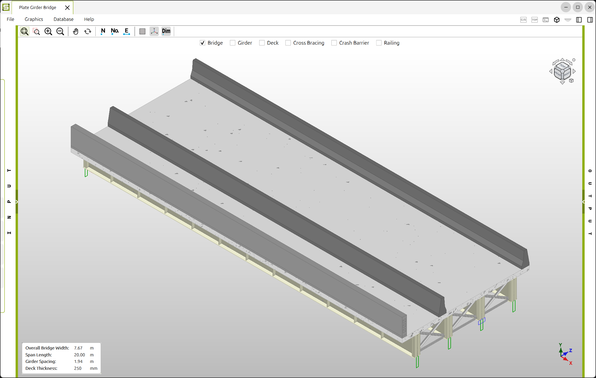
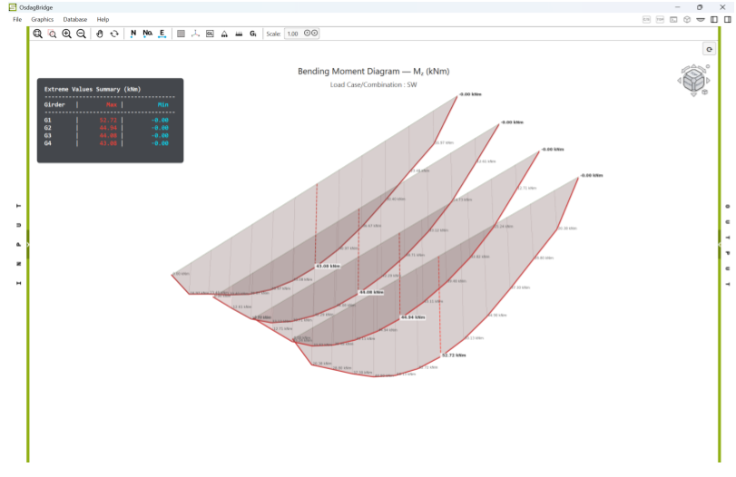
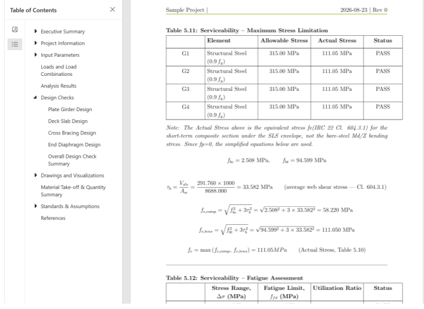

OsdagBridge
OsdagBridge is a cross-platform free and open-source software for the analysis and design of steel girder bridges, following the Indian Standards (IS) and Indian Road Congress (IRC) guidelines.


Why OsdagBridge
First open-source software developed for IRC-based bridge design.
Free and Open Source
No licence fee, no seat limits, no renewal. Download it, use it on any number of machines, and inspect every calculation behind the results.
Install in Minutes, Design in Minutes
A straightforward installer and a guided workflow take you from a fresh setup to a completed short-span composite girder design in a single sitting.
Minimal Inputs, Full Control
Start with span, carriageway width and material properties, and OsdagBridge supplies defaults for everything else, based on IRC provisions and industry best practice. Override any parameter, section or material when your project demands it.
IRC Clauses Built In
Load models, combinations, material factors and code checks follow IRC:6-2017, IRC:22-2015 and IRC:24-2010. The clause references are shown alongside the results, so every check is traceable.
Complete Superstructure Design, Visualised
Deck slab, girders, shear connectors, stiffeners and bracing are designed together, then rendered as an interactive 3D model you can rotate and inspect before finalising.
Reports, Quantities and BIM Export
Generate a detailed design report with the full calculation trail and a bill of quantities, and export the 3D model to IFC for use in your BIM and CAD workflows.
Highlighted features
Screenshots of the Template page, 3D CAD, plots and report.

Template Page
3D CAD Model
Analysis Plots
Report Preview